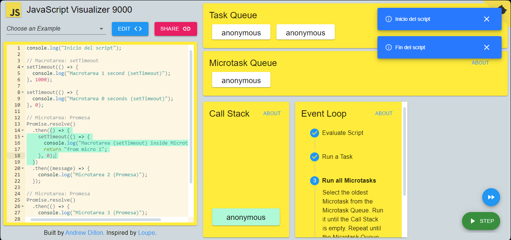
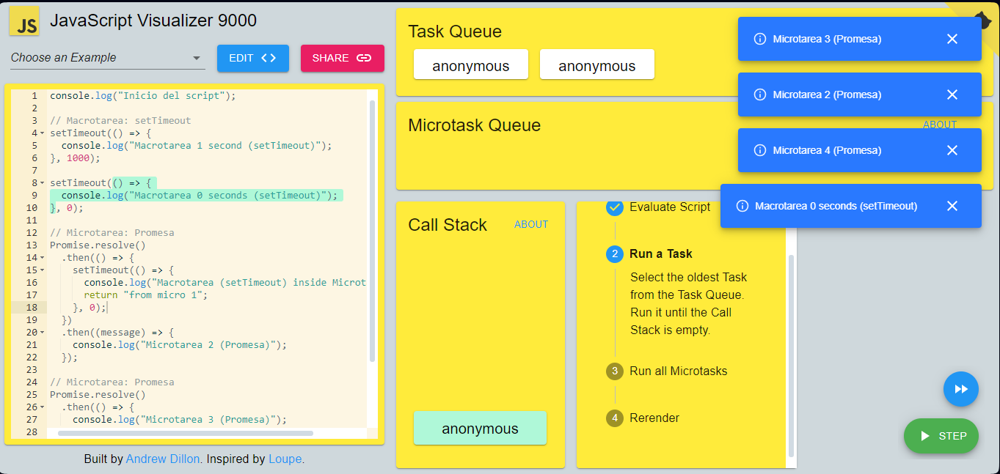
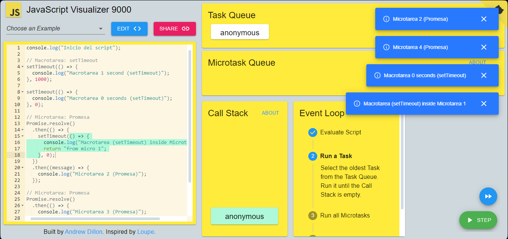

En este caso se consideran microtareas las promesas y macrotareas los setTimeout
El event loop selecciona la Microtarea más antigua de la Cola de Microtareas y la ejecuta hasta que el callstack esté vacío. A continuacion repite el proceso hasta que la cola de microtareas esté vacía. A continuación, hace lo mismo con las Macrotareas
En este caso la microtarea 1 se ejecuta como promesa, se añade la macrotarea que se encuentra dentro de la misma a la Task Queue y la ejecuta cuando se ejecutan las demas macrotareas
Las promesas se manejan como micro tareas, por ende siempre se van a ejecutar primero que los setTimeout ya que estos ultimos generan macro tareas, inclusive si el setTimeout tiene un tiempo de espera de 0 sesgundos, no se ejecutara hasta que se hayan terminado de ejecutarse las microtareas